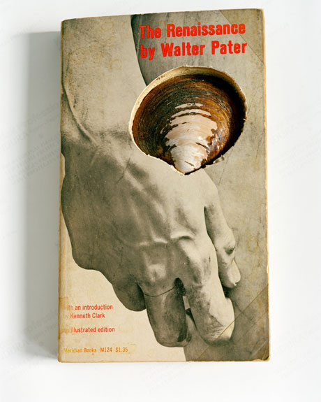

exhibition archive |
||
As A Real Houseby Sarah Palmer March 18 – May 15, 2010 Opening Reception: Gallery hours: Images: |
 The Wild Project is pleased to present As A Real House, the first solo exhibition of photographs by Sarah Palmer. The exhibition culls images from Palmer’s series of the same title, which evolved from previous work that sought memory, lost time, and hints of the absent-present in landscapes, rooms, and objects. As A Real House turns these ideas inward, departing from a critical exploration of the sentimental and the sweet, and moves into darker corners of remembrance, identity, and invention. The work explores the artist’s futile attempt to study time by stopping it mid-decay, and traces of her search for the possible and impossible within the medium. Palmer plays with elements of scale to reveal the vulnerability of both the subject and medium. As A Real House delves into the self-reflexive realms of photography, commenting directly on the boundary between what is real and what is invented, immediate and hidden, desirable and grotesque. Sarah Palmer was born in 1977 in San Francisco, CA, and currently lives and works in Brooklyn, NY. She received her MFA in Photography, Video and Related Media from School of Visual Arts in 2008 and her BA in English/Italian from Vassar College in 1999. She was awarded an Aaron Siskind Foundation Fellowship in 2007. Her work is currently featured in the exhibition 31 Women in Art Photography at Affirmation Arts, New York. She has been visiting critic at School of Visual Arts and Adelphi University among other institutions. She has done portfolio reviews and sat on grant panels for Lower Manhattan Cultural Council, the Art Directors Club, School of Visual Arts, and Rooftop Films. For more information please contact Hilary Schaffner at 212. 228.1195 or info@thewildproject.com |
|
exhibition archive |
|||
| 2016 | 2015 | 2014 | 2013 |
| 2011 | 2010 | 2009 | 2008 |